OFFICIAL MUSIC SITE
PIPPOPPER
選んだ一曲を、いまの音で。歌詞と物語ごと、届ける。
Latest Release最新楽曲

your place
PIP POPPER
AIの感想出会いと別れを重ねてきた相手に、「もう一人で抱え込まなくていい」と語りかける、温かな応援歌。弱さも、くだらない話も見せていいと受け止める優しい第1ヴァースから、過去を振り返らずに自分の物語を切り開けと背中を押す第2ヴァース、迷いや傷を抱えながらも「決めるのはMyself」と大海原へ漕ぎ出す第3ヴァースへと、視点と温度を変えながら同じ想いが深まっていく構成が見事。英語のコーラスとHOLYの響きが重なるサビは、聴く人それぞれの「居場所」を照らすように開放的だ。普段の作風を封印して書かれた"よそ行き"の応援歌だが、「豪快に行こうかい／後悔するより大きな海へ航海へ」の遊び心や、3番で思わず顔を出す本音に、隠しきれないPIP POPPERらしさがのぞくのもご愛嬌。王道も書けることを証明してしまった、ちょっと照れくさい一曲。
作品ページへWorks楽曲一覧
33 作品を掲載中
-
your place
your
place -
TRY ANGLE
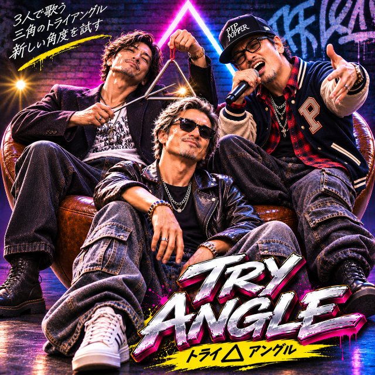
TRYANGLE -
PIPPOPPER ENTERTAINMENT
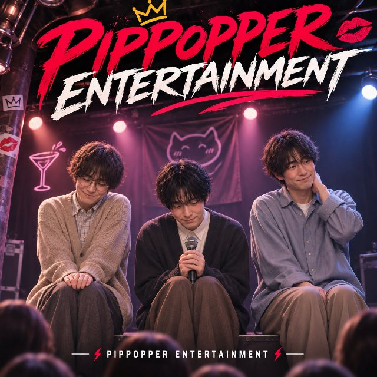
PIPPOPPERENTERTAINMENT -
倦怠期 -THE STAGE OF BOREDOM-
倦怠期
-THE STAGE OF BOREDOM- -
甘いワナ
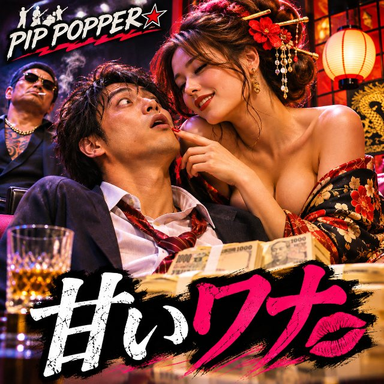
甘いワナ 目の前にぶら下がったお金と贅沢な暮らし。怪しいと分かっていながらも、誘惑に負けて抜け出せなくなる男の姿を、軽快な言葉遊びとユーモアで描いた一曲。 忠告する側と誘惑に揺れる側の掛け合いが面白く、まるで短編コメディを見ているような展開が楽しめる。 実際の仲間同士の会話から、その日のうちに生まれたという制作背景も魅力的。 何気ない会話をそのまま物語に変えてしまう、 PIP POPPERらしい遊び心が詰まった作品だ。 試聴する -
Talk About Separation
Talk
About Separation -
低所得層サラリーマンより
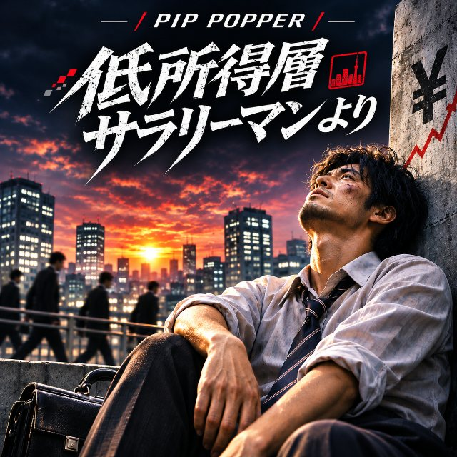
低所得層サラリーマンより この曲を聴いてまず感じるのは、笑ってしまうほどリアルな生活の苦しさと、その裏側にある強烈な反骨精神だ。 月々のお小遣いは一万円。働いても働いても生活は楽にならず、結婚やマイホーム、将来の老後まで、お金の問題がついて回る。そんなサラリーマンの日常を、遠慮のない言葉とユーモアで描いている。 特に印象的なのは、貧しさを嘆くだけで終わらず、富裕層への嫉妬、税金や社会保険への不満、雇われて働き続けることへの疑問まで、次々と話題を広げていくところだ。コンビニの廃棄弁当から年金、住宅、少子化、NHKまで登場する展開には、まるで一人のサラリーマンが日頃の不満を一気にぶちまけているような勢いがある。 そして、この曲の面白さを支えているのが、独特の言葉遊びと韻の踏み方。「お金の恨みはおっかねぇ」など、思わずニヤリとする表現が随所に散りばめられている。重い社会問題を扱いながら、説教臭くならず、どこかコミカルに聴かせるバランスがいい。 サビで繰り返される「心だけはリッチマン」という言葉も印象的だ。財布の中身は寂しくても、夢だけは大きく持っていたい。そんな強がりにも似た言葉が、曲全体の悲哀とユーモアを象徴している。 何より、この曲には「もっと自由に生きたい」「働くためだけに人生を使いたくない」という願いが一貫して流れている。 時代が変わっても、生活費、将来への不安、働き方への疑問は多くの人にとって身近な問題だろう。 笑えるのに、笑ってばかりもいられない。そんな苦笑いを残してくれる、庶民目線の痛快な社会風刺ラップだ。 試聴する -
WE LOVE MUSIC
WE
LOVE MUSIC -
らっぷごっこ
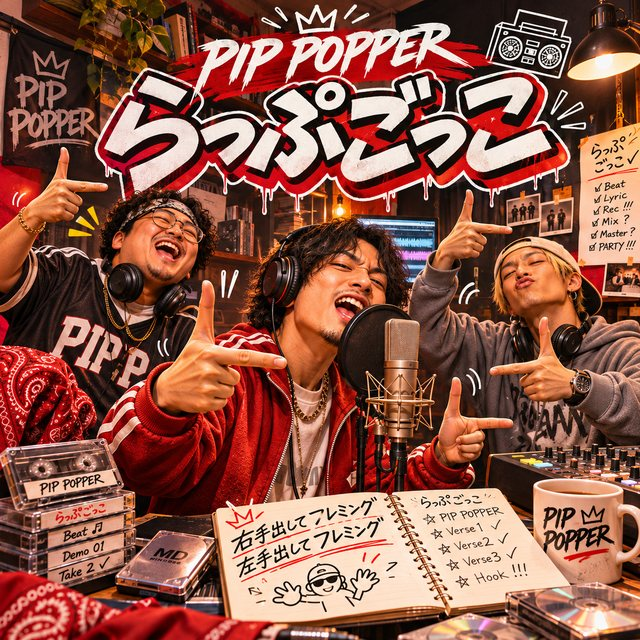
らっぷごっこ 「右手出してフレミング、左手出してフレミング」。3人体制になったPIP POPPERが、音楽を作る楽しさそのものを歌った一曲。ラップが上手いかどうかより、仲間が集まって好き勝手に歌い、一曲を完成させることを楽しむ。2006年のアルバム『南風』の収録曲。 試聴する -
Blood type feat.AI
Blood
type feat.AI -
こんなこといいな feat.AI
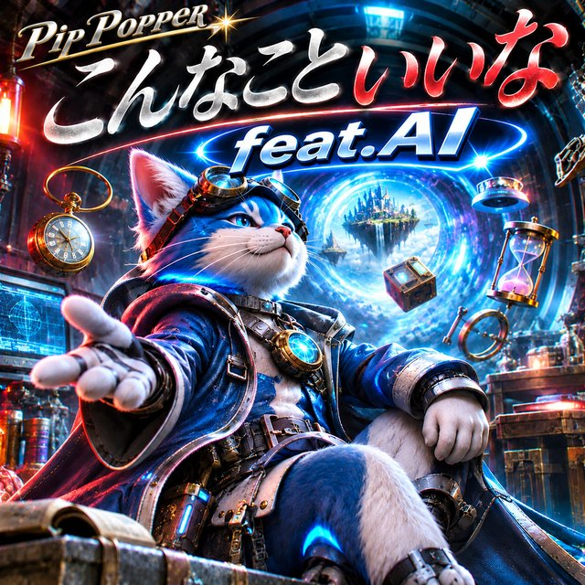
こんなこといいなfeat.AI -
彼女に不満
彼女に
不満 彼女への不満を、早口ラップと掛け合いで一気に吐き出すコミカルな一曲。シンセサウンドに乗せて、男の本音と身勝手さが止まらない。 試聴する - OneLove OneLove 女性R&Bボーカルと男性ラップが交差する『OneLove』。出会いと別れを繰り返しながら、それでも誰もが求め続ける愛を描いた一曲。 試聴する
-
BADBOYZ -ヒモの道-
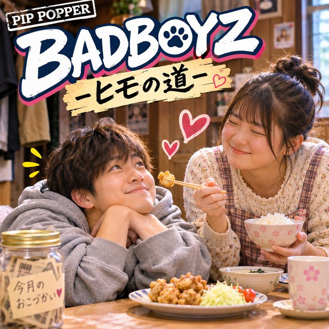
BADBOYZ-ヒモの 道- -
Diet
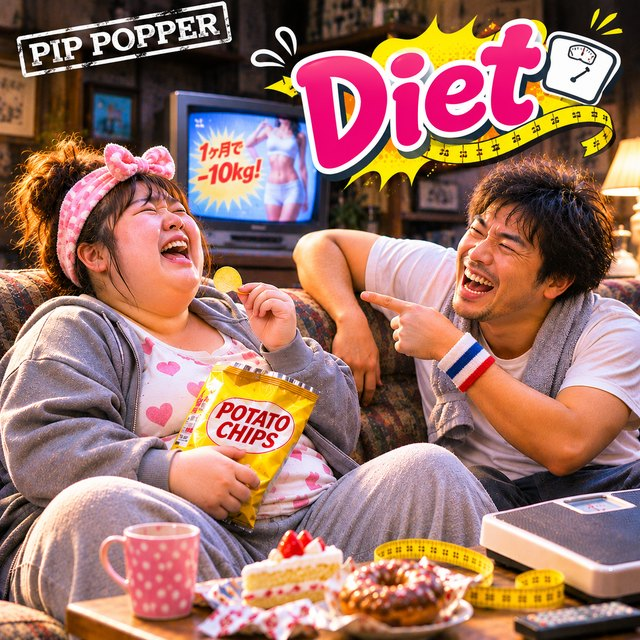
Diet 「ダイエットは明日から」と言い続ける彼女と、それを笑いながらツッコみ倒す彼氏。深夜のテレビショッピング、ポテトチップ、体重計の数字、そしてリバウンド。誰もが一度は身に覚えのある“痩せたいのに痩せられない”日常を、軽快なラップと容赦ないツッコミで描いた、明るくユーモラスな一曲。「戻りたいけど戻れない」と繰り返すサビには、笑いの中にほんの少しの切実さもにじむ。 試聴する -
Lost days
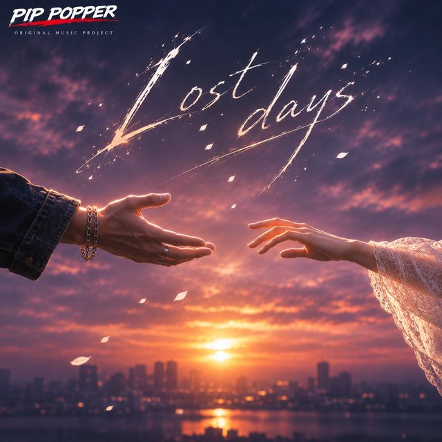
Lostdays -
すけこまし -AI remix-
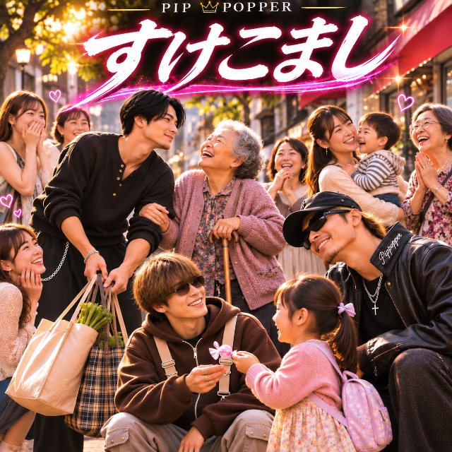
すけこまし-AI remix- -
SLOTER -破滅に向かって-
SLOTER
-破滅に 向かって- - Distance Distance 「Do you Love Me Now?」という問いかけから始まる、メロディアスな歌とラップで遠距離恋愛を描いたラブソング。「こんなに近くにいるのに」心ははるか彼方にあると感じる冒頭が、物理的な距離以上に広がっていく心の距離を突きつける。数週間ぶりに会えた恋人の俯く姿に違和感を覚え、突然のメールや減っていく電話の回数、電話の向こうの騒がしさに不安を募らせていく。疑いだしたらキリがないと分かっていながら、疑ってしまう葛藤が生々しい。それでも相手を責めるだけでなく、「しっかりしてなかった僕のせい」「距離を言い訳にしたくねぇ」と自分を省みる姿勢に、この曲の誠実さがある。「離さないよ君をずっと」「信じてたいBelieve your heart」という言葉には、答えが見えないままでも相手を信じ続けたいという願いが込められている。愛情と疑念の間で揺れる心を、そのまま切り取った一曲。 試聴する
-
Friendship
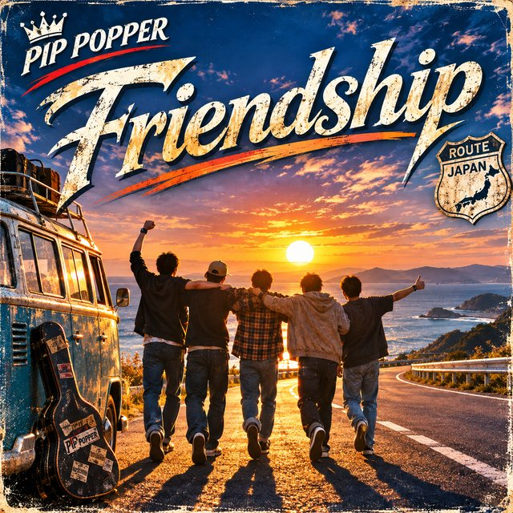
Friendship 「よみがえる記憶の中」から始まり、メロディアスな歌とラップが交互に思い出をたどっていく友情ソング。「あいつとは合わない」と言いながら、合わせる気がないことまで知っている関係には、無理に足並みをそろえない仲間ならではの気楽さがある。会う頻度が減っても「会ってなくても孤独は感じない」と言い切る言葉に、距離や時間では揺らがない絆がにじむ。九州から日本を縦断する車内で交わしたくだらない冗談や恋愛話、窓の外を流れていく草木の描写は、旅の空気をそのまま運んでくる。セピア色に染まった景色をまっさらなキャンバスに戻し、新しい色を足そうとする後半から、最後の「次はいつ行く？春夏秋冬」へ。懐かしさで終わらず次の旅の約束へと向かう、これからも続いていく友情の歌だ。 試聴する -
いとしのハニー
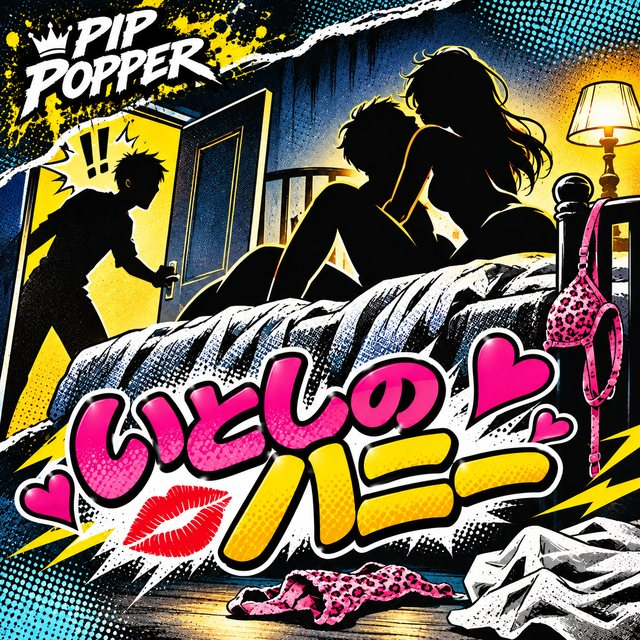
いとしのハニー 「ちわ～っす!」の挨拶から始まり、複数の男性ボーカルが掛け合いで進めるコミカルなヒップホップ。同棲中の恋人と親友の浮気を目撃するという最悪の場面を、畳みかける韻とツッコミの応酬で笑い話へ変えていく。仕返しの話はいつの間にか「ブスでもいいじゃない」という独特の恋愛観の主張へ転がり、「じゃない」を重ねるフレーズが耳に残る。間奏には布団のたとえ話をめぐる会話劇が挟まり、仲間同士の日常会話から生まれた発想らしい遊び心がそのまま曲になっている。きわどい言葉も多いが、聴きどころは発想の飛躍と、掛け合いの間合いの良さだ。 -
Be myself
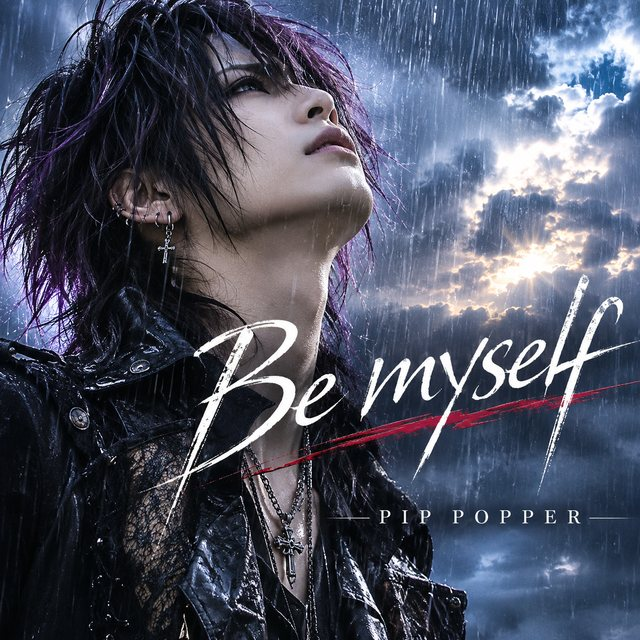
Bemyself -
Showtime 2010
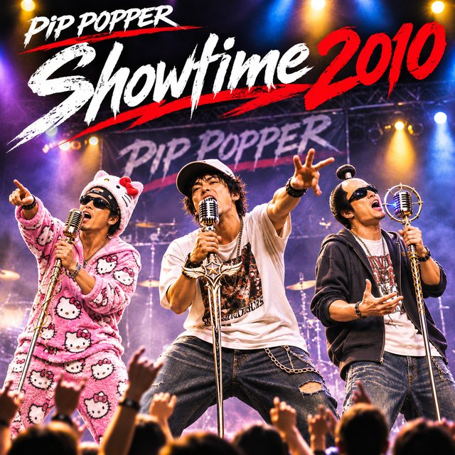
Showtime2010 -
Close My Heart
Close
My Heart -
3月30日
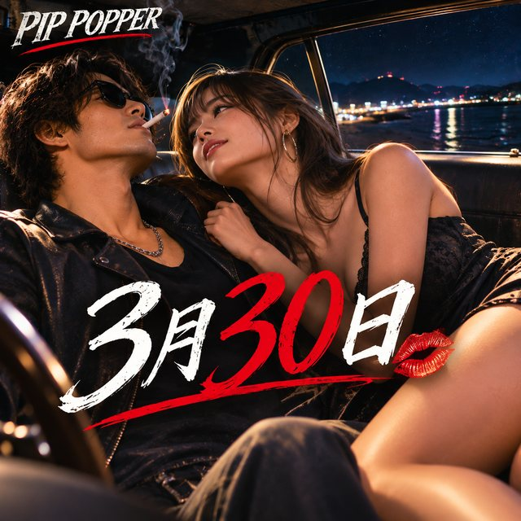
3月30日 メールで知り合った顔も知らない相手と初めて会う一夜を、男性のラップと女性の歌の両方の視点から描いた楽曲。携帯電話とメールが恋の入り口だった時代の空気が、待ち合わせのバーや夜の海岸線のドライブとともに描かれる。軽い遊びのつもりの男と、一夜限りで終わらせたくない女のすれ違いが、生々しさと切なさの入り混じった余韻を残す。 試聴する -
TRADER-損切戦士-
 TRADER-
TRADER-損切戦士- 損切りができずに含み損を抱え続ける個人投資家の悲哀を、自嘲たっぷりに描いた投資ソング。ナンピン、追証、掲示板の煽り、デイトレーダーの成功本など、株式投資の「あるある」が次々と登場する。欲と忍耐のあいだで揺れる姿を笑い飛ばしながら、いつの間にか「金の奴隷」になってしまう怖さも浮かび上がらせている。 試聴する -
LOVELESS
 LOVELESS
束縛の強い恋人との関係に息苦しさを感じながら、別れを切り出せずにいる男の本音をまくしたてる一曲。首輪とリード、部屋を埋め尽くすキャラクターグッズといった具体的なモチーフで、不自由な日々がコミカルに描かれる。「明日こそ別れる」と言いながら結局流されてしまう情けなさまで隠さず描き、英語交じりのサビがその叫びを際立たせている。
試聴する
LOVELESS
束縛の強い恋人との関係に息苦しさを感じながら、別れを切り出せずにいる男の本音をまくしたてる一曲。首輪とリード、部屋を埋め尽くすキャラクターグッズといった具体的なモチーフで、不自由な日々がコミカルに描かれる。「明日こそ別れる」と言いながら結局流されてしまう情けなさまで隠さず描き、英語交じりのサビがその叫びを際立たせている。
試聴する
-
GOING MY WAY
GOING
MY WAY -
MENKUI
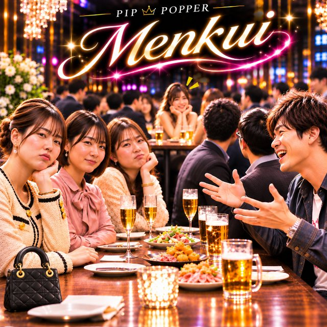
MENKUI 合コンで「顔で選ぶ」女性たちにまったく相手にされない男の奮闘を、冷たく突き放すサビと、食い下がるラップの掛け合いで描いた一曲。空回りする幹事の気遣い、イケメンへの露骨な態度の差、負け惜しみ混じりの反撃が次々と飛び出す。見た目で人を選ぶ側と選ばれない側、どちらの身勝手さも笑いに変えてしまう風刺の効いたコミカルソング。 試聴する -
Manner
 Manner
公衆トイレやプールでのマナー違反に対する怒りを、容赦のない言葉と畳みかけるラップで爆発させた一曲。下品な題材を真正面から扱いながら、韻を踏み、言葉遊びを重ね、最後まで妙な勢いで突っ走る。ふざけているようで、訴えていることは至って真面目。「自分の後始末くらい自分でしろ」という、実に正論なマナー啓発ソング。
試聴する
Manner
公衆トイレやプールでのマナー違反に対する怒りを、容赦のない言葉と畳みかけるラップで爆発させた一曲。下品な題材を真正面から扱いながら、韻を踏み、言葉遊びを重ね、最後まで妙な勢いで突っ走る。ふざけているようで、訴えていることは至って真面目。「自分の後始末くらい自分でしろ」という、実に正論なマナー啓発ソング。
試聴する
- Anniversary Anniversary 仲間の結婚を祝うために、二人のメンバーが交互に言葉をつないで贈った一曲。昔からの悪友だからこそ言える遠慮のない冗談と、面と向かっては伝えにくい本気の祝福が入り交じる。ふざけた言葉の奥にある友情が、まっすぐなサビで顔を出す。PIP POPPERらしい、少し照れくさくて温かいウェディングソング。 試聴する
-
ブスの瞳に恋してる。。。
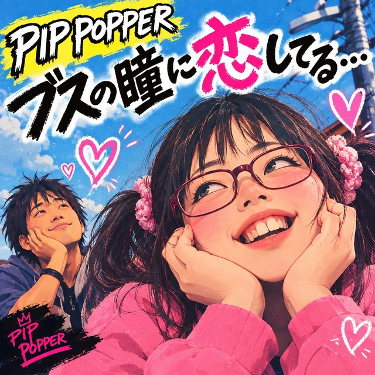
ブスの瞳に 外見やお金をめぐる打算的な恋愛が、いつしか本気の愛情へと変わっていく。人間の身勝手さと恋愛の不思議さを、ユーモラスに描いた楽曲。 試聴する恋してる。。。 -
就職活動
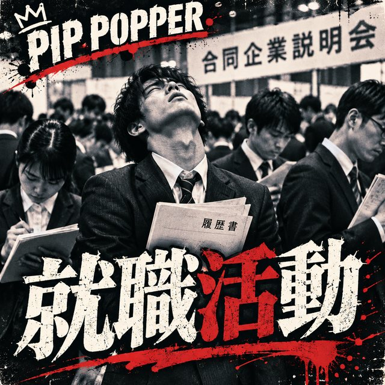
就職活動 就職活動や労働社会を、皮肉と風刺を交えて描いた楽曲。 試聴する
このカテゴリーの曲はまだありません。